⚠️ 火山警戒與天氣
阿蘇中岳火山口常因噴氣過量關閉，出發前一小時/抵達收費前皆務必查看 阿蘇火山火口規制情報。
08:30–
09:00
09:00
Kamenoi Hotel Aso

阿蘇公園道路（左側白色建築為阿蘇火山博物館）
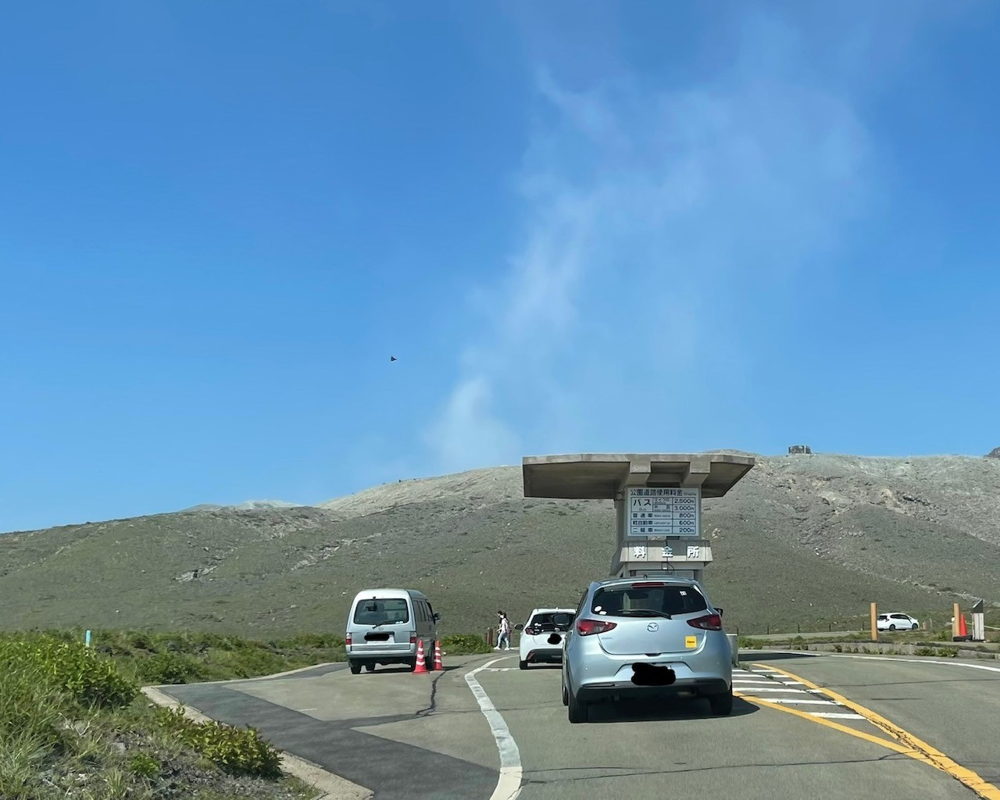
阿蘇收費站

阿蘇火山口步道
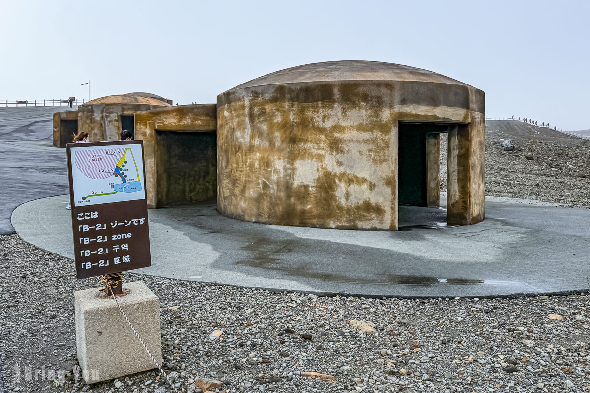
火山避難休憩所
09:40–
10:40
10:40
阿蘇中岳火山口
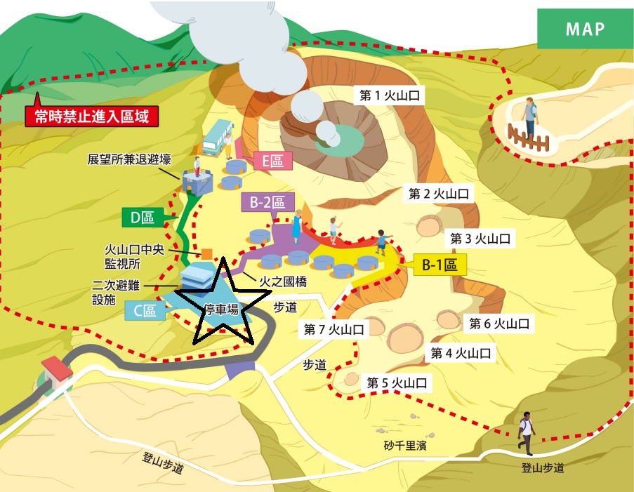
📄 阿蘇中岳火山口參觀（PDF）
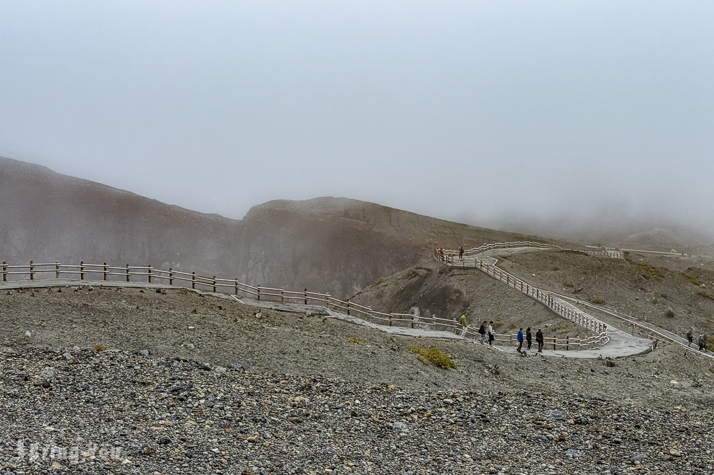
火山口步道

火山口步道遠景

阿蘇火山口標誌
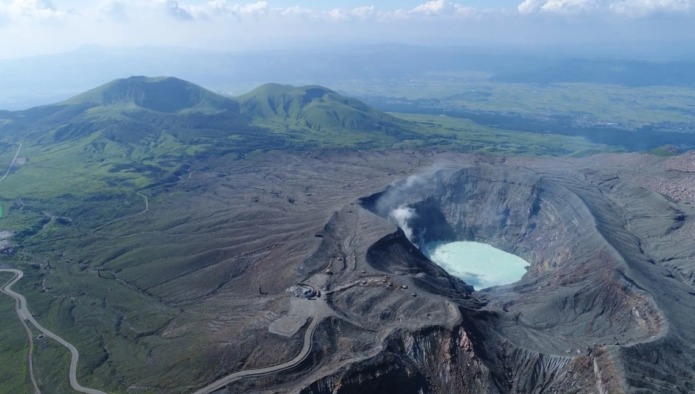
中岳火山口

中岳火山口空拍
10:45–
11:45
11:45
草千里ヶ浜
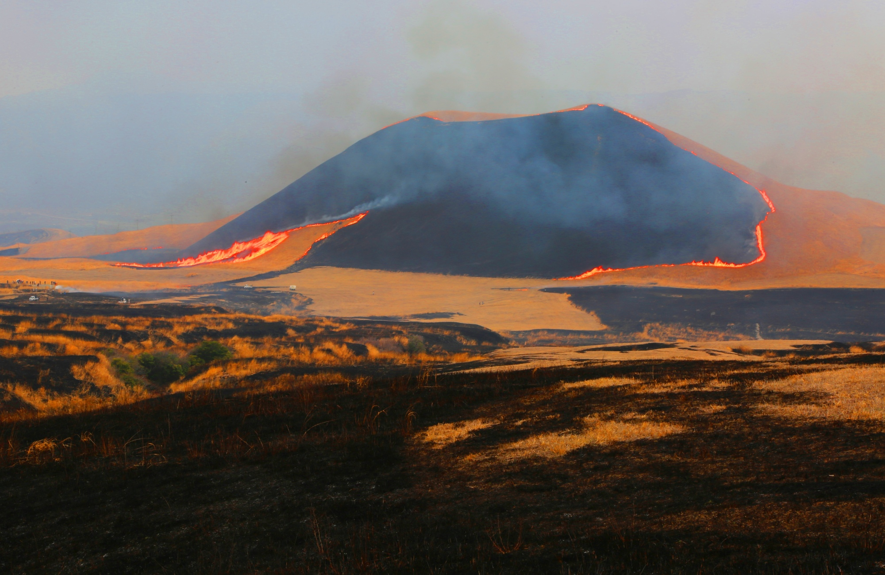
草千里野燒景觀
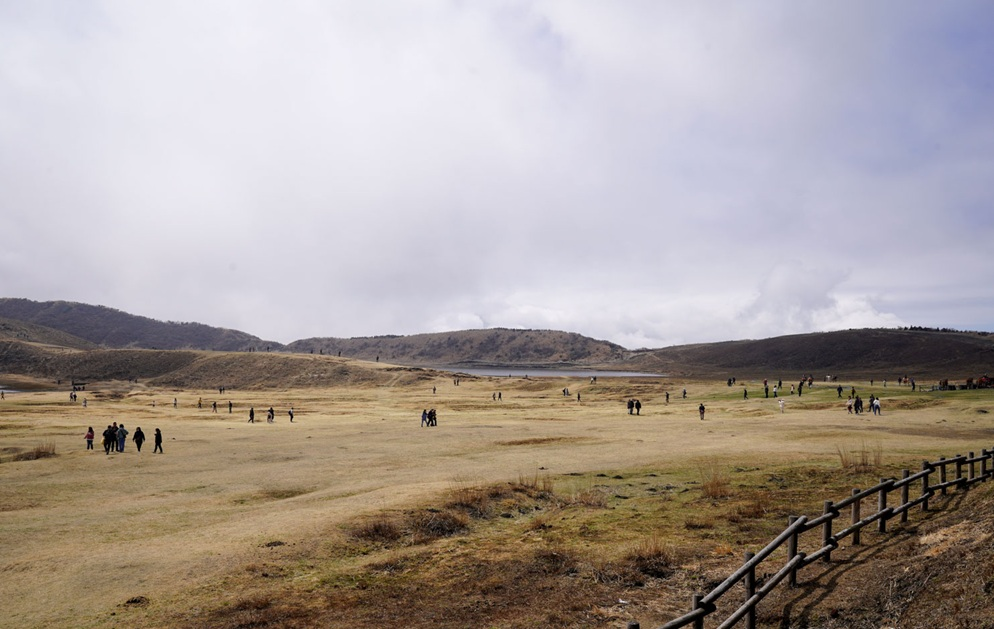
草千里三月草原

草千里放牧馬匹
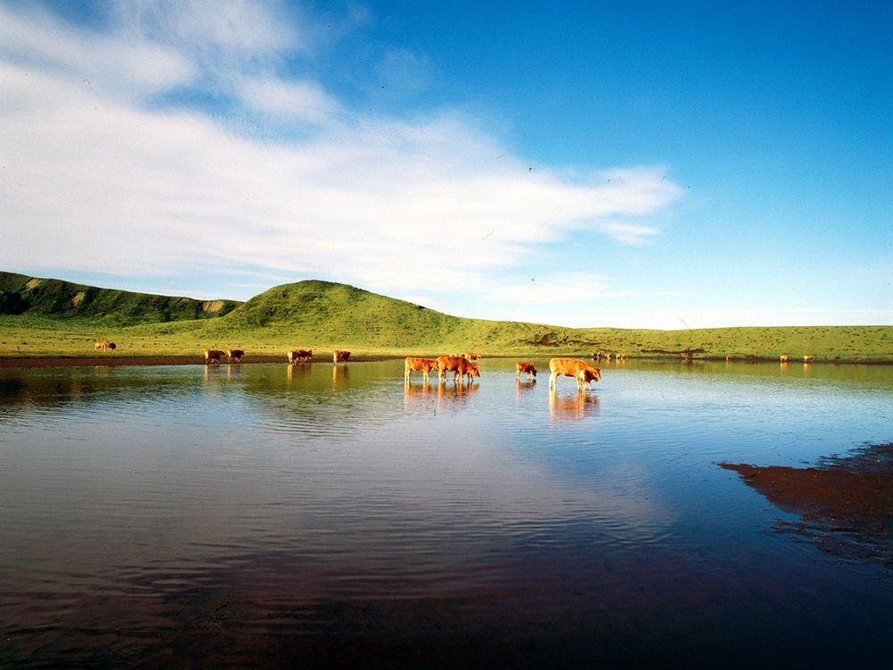
草千里湖畔景觀
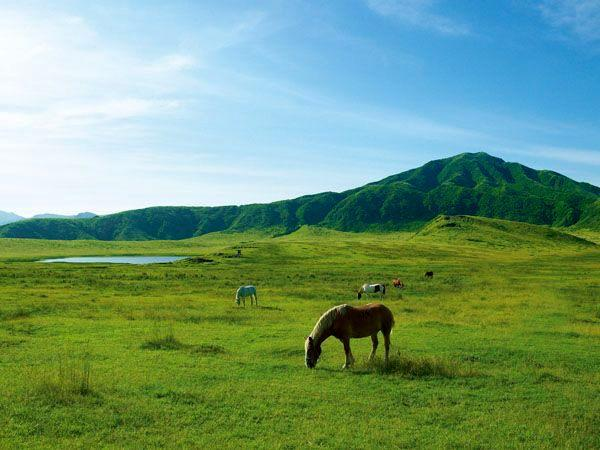
草千里綠草季

草千里咖啡焙煎所
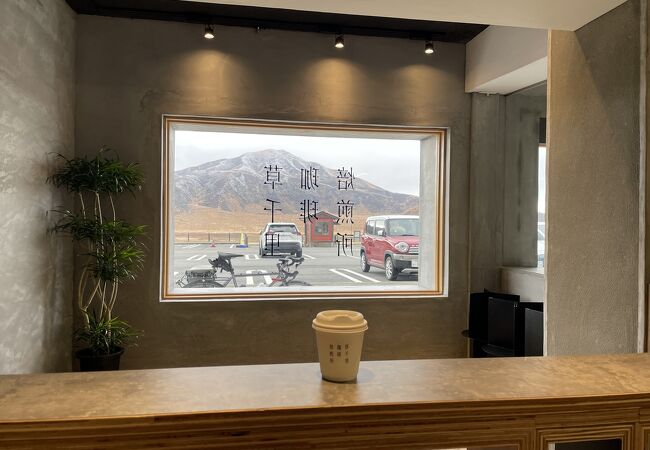
咖啡店內景觀窗
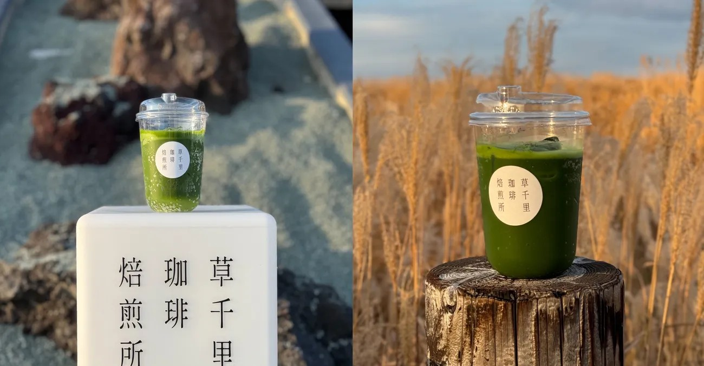
草千里特色飲品
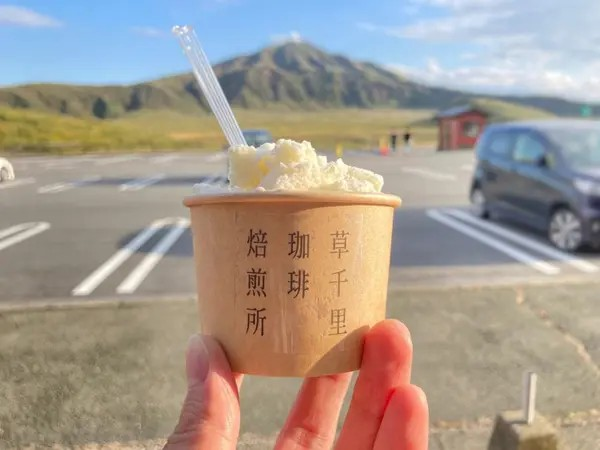
草千里甜點
12:15–
12:45
12:45
高森町觀光交流中心
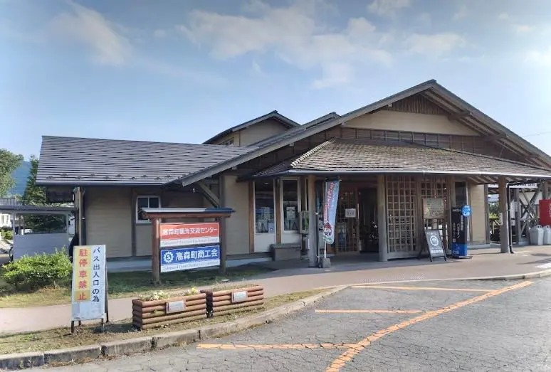
高森町觀光交流中心
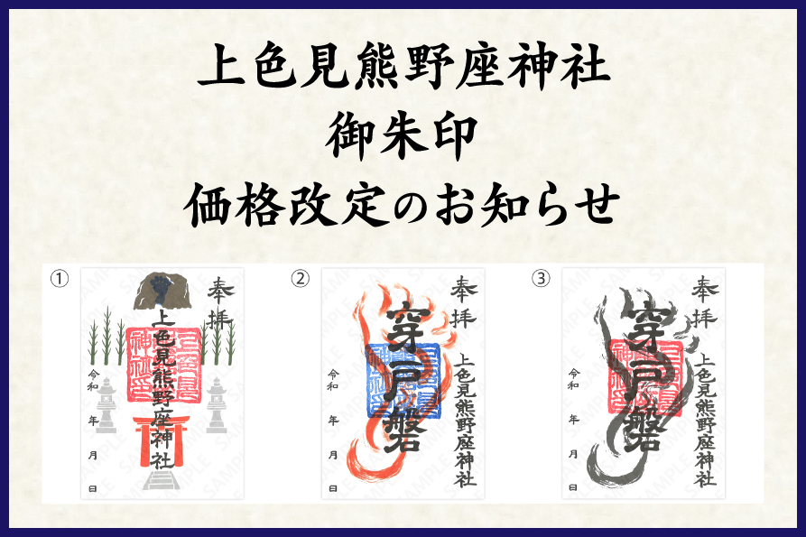
御朱印
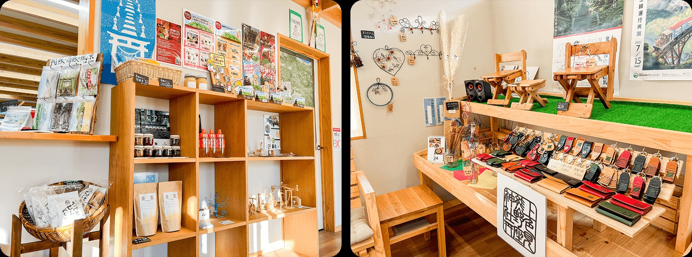
在地伴手禮
13:15–
14:00
14:00
上色見熊野座神社
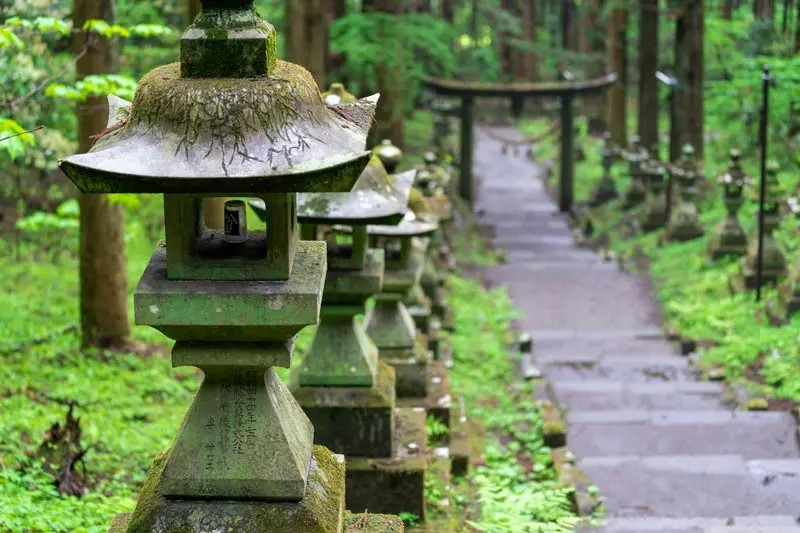
石燈籠參道

杉木林階梯
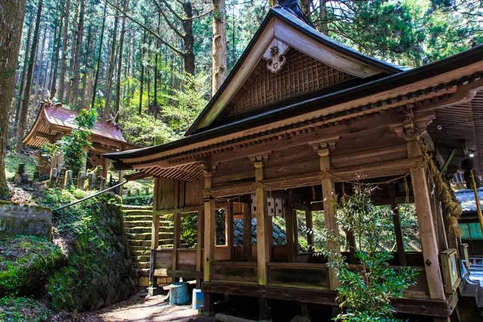
上色見熊野座神社本殿
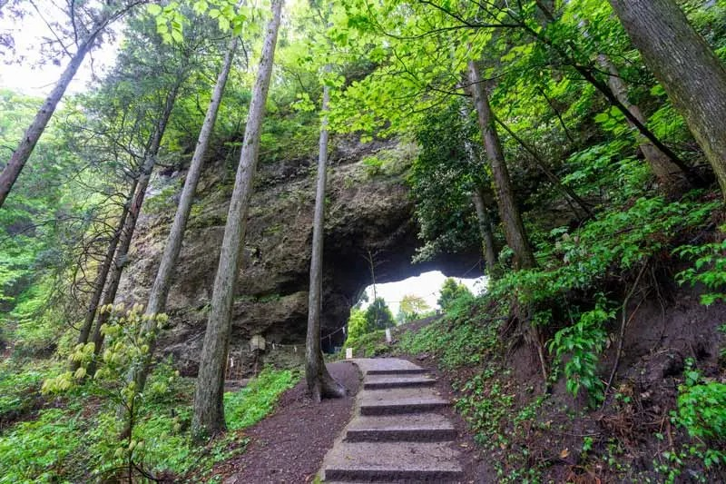
穿戶岩
14:00–
16:15
16:15
前往太宰府
16:15–
17:45
17:45
太宰府天滿宮

太宰府天滿宮地圖

太宰府表參道

太宰府天滿宮樓門

太宰府垂枝梅
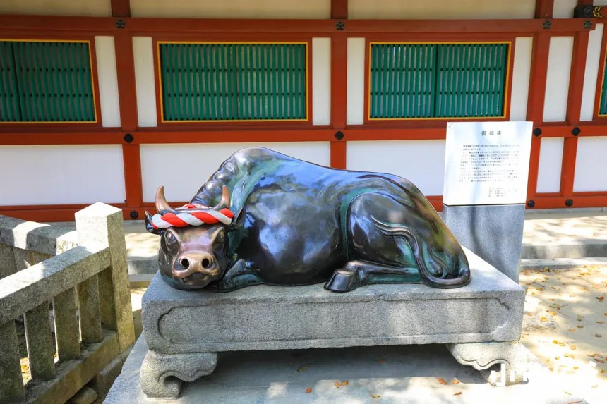
御神牛

太宰府星巴克

一蘭合格拉麵
18:00–
20:00
20:00
Budget Rent-a-car Tenjin-kit 還車